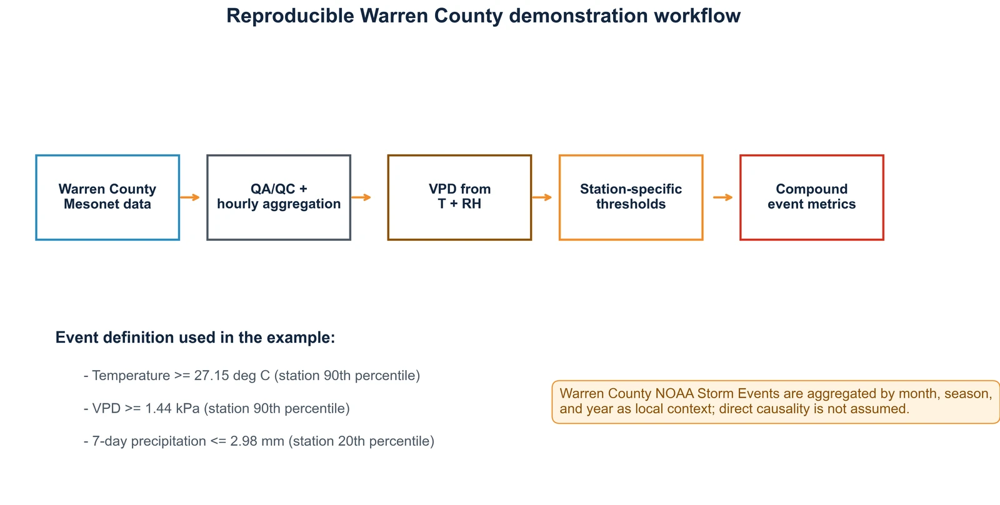
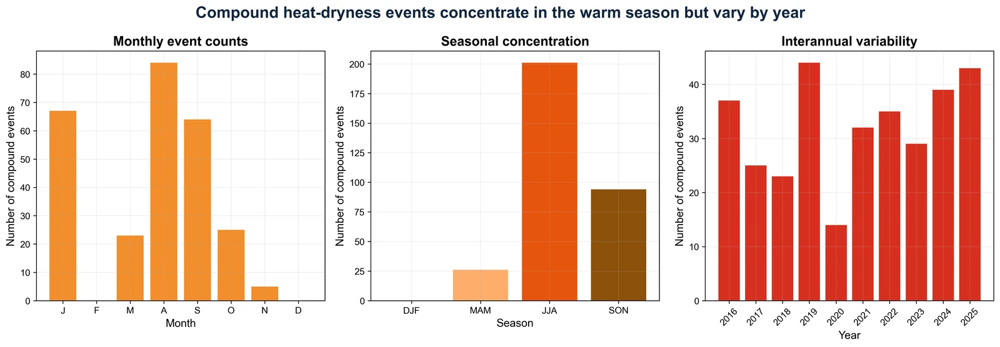

Tracking heat and atmospheric dryness in Kentucky
Station-based diagnostics of concurrent high temperature and vapor pressure deficit across Kentucky.
- Record
- 2016–2025
- Network
- Kentucky Mesonet
- Time step
- Hourly
- Threshold
- 90th percentile
The question
When do high temperatures coincide with unusually high atmospheric moisture demand?
This collaborative project examines compound heat–dryness events using Kentucky Mesonet temperature and relative humidity observations. It focuses on atmospheric dryness, which complements precipitation-based drought metrics.
Data & methods
A closer look at
the approach.
Quality-controlled station observations are used to calculate vapor pressure deficit. Station-specific 90th-percentile thresholds identify concurrent hot and dry conditions, followed by event-frequency, duration, intensity, and seasonality diagnostics.
Findings & context
What the work shows.
- Local thresholds account for differences in station climatology.
- Joint temperature and vapor pressure deficit diagnostics identify periods of elevated atmospheric moisture demand.
- The workflow describes event timing, persistence, and spatial variability across Kentucky.
Collaborative research project.
From the analysis
Research figures.
Select a figure to view it larger.
{kind=link}


{kind=link}

{kind=link}